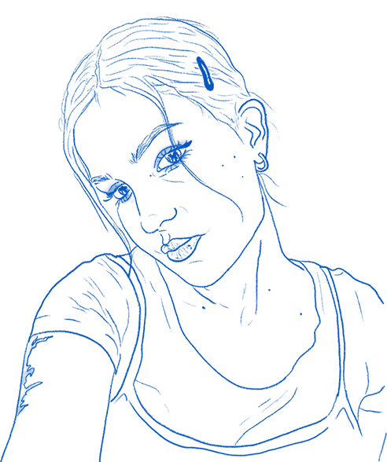

'Creatief, gevoelig en vasthoudend'
Hallo daar! Ik ben Sara Julide Atilgan, een 21-jarige Communication & Multimedia Design student aan de HVA.

Ik vind het leuk om te leren over verschillende aspecten van dit vakgebied om mijn skills te verbeteren. Een van de dingen waar ik momenteel mee bezig ben tijdens mijn opleiding, is user experience. Ik vind het interessant hoe mensen met technologie omgaan en hoe ik hun ervaring kan verbeteren.
Daarnaast ben ik ook geïnteresseerd in andere gebieden binnen communication & multimedia. Ik vind grafisch ontwerp fascinerend en ik heb oog voor detail. Tekenen is een van mijn hobby's en ik waardeer de mogelijkheid om mijn creatieve gedachten op papier tot leven te brengen. Ik probeer altijd te streven naar verbetering en ik ben vastberaden om mijn vaardigheden te ontwikkelen.
In mijn vrije tijd vind ik het heerlijk om gewoon te ontspannen met mijn schetsboek. Het is een manier voor mij om te ontsnappen aan de drukte en mijn creativiteit de vrije loop te laten. Ik ben geen professionele kunstenaar, maar ik geniet echt van het proces van tekenen en het uitdrukken van mijn gedachten en emoties.